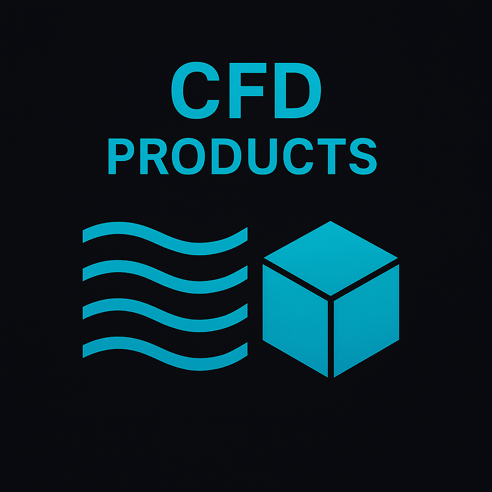
Accelerate your product development with tailored CFD solutions powered by AI. Our custom-built simulations combine domain-specific physics with machine learning to deliver faster, accurate insights for complex fluid dynamics problems. Ideal for aerospace, automotive, and energy sectors seeking design optimization, performance tuning, and reduced computational costs—without compromising precision.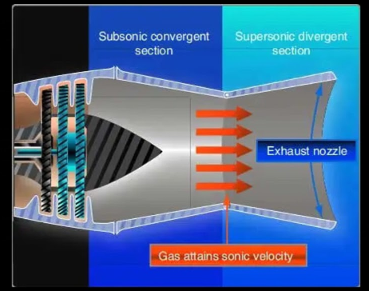
Optimize jet engine nozzle performance using AI-driven simulations. Our solution employs physics-informed neural networks (PINNs) to rapidly evaluate nozzle geometries, improving thrust, fuel efficiency, and thermal tolerance. Cut design cycles from weeks to hours while maintaining aerospace-grade precision—ideal for R&D teams in defense, aviation, and propulsion innovation.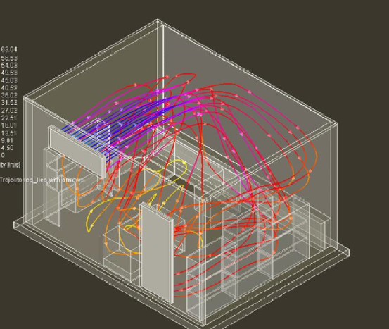
Optimize HVAC airflow in smart buildings with AI-enhanced CFD models. Our solution uses physics-informed neural networks to simulate air circulation, temperature gradients, and ventilation efficiency in real-time. Reduce energy costs, improve occupant comfort, and adapt dynamically to building usage—perfect for facility managers and green building innovators.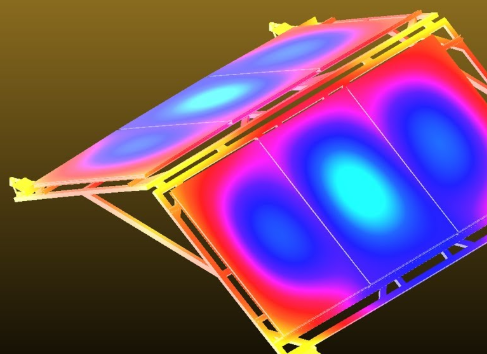
Predict and mitigate wind-induced stresses on solar installations with tailored CFD analysis. Our simulations optimize panel orientation and mounting for structural safety and efficiency, reducing downtime and material fatigue. Ideal for solar farm designers and renewable energy consultants seeking resilience against extreme weather.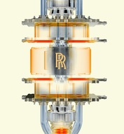
Accelerate chemical innovation with high-fidelity CFD models of combustion in microreactors. Our simulations reveal detailed flame structure, heat release, and pollutant formation, enabling safe, efficient, and scalable reaction engineering—perfect for pharma, green chemistry, and process intensification teams.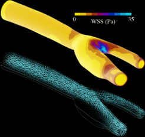
Model patient-specific blood flow using advanced CFD and PINNs. We simulate hemodynamics in complex arterial networks to support surgical planning, stent design, and disease progression analysis—empowering medtech companies and cardiovascular researchers with data-driven clinical insights.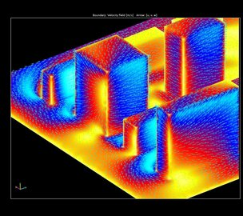
Simulate urban airflow and pollutant spread with our AI-augmented CFD platform. Analyze emissions impact, ventilation design, and health risks across neighborhoods—supporting urban planners, environmental agencies, and smart city developers in designing cleaner, safer environments.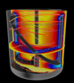
Improve chemical yield and energy efficiency with detailed CFD analysis of turbulent mixing in stirred tanks. We simulate vortex dynamics, residence time, and multi-phase interactions, supporting optimal baffle placement and impeller design in food, pharma, and chemical industries.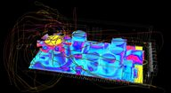
Prevent thermal failure in high-density electronics with precision CFD simulations. We model heat flow in PCB layouts, chips, and enclosures to optimize cooling strategies, airflow paths, and thermal interfaces—ideal for electronics manufacturers and embedded systems designers.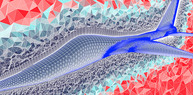
High-quality meshes are the backbone of accurate CFD. We deliver automated and customized mesh generation workflows, optimizing grid quality, boundary resolution, and computational load—streamlining simulations for analysts and engineers across aerospace, automotive, and biomedical sectors.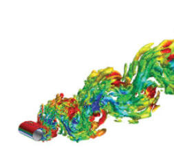
Achieve high-fidelity turbulence resolution using LES and DNS techniques. Our services uncover unsteady flow structures and small-scale eddies, enabling deeper insights for research, combustion, and noise studies where RANS models fall short—ideal for advanced aero and fluid mechanics projects.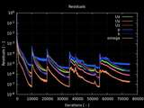
Speed up design decisions with automated parametric sweeps and DoE-integrated CFD. We help you explore design space efficiently, identify key performance drivers, and support optimization workflows across industries—from aerospace to HVAC to manufacturing.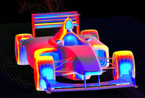
Turn raw CFD data into actionable insights with advanced post-processing. We create customized plots, animations, and dashboards that highlight flow behavior, thermal hotspots, and stress zones—improving stakeholder communication and engineering decisions.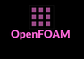
Get started with CFD instantly using our pre-packaged OpenFOAM environments. Optimized for performance and ease-of-use, our setups include solvers, tutorials, and automation tools—ideal for teams who want robust open-source CFD without the setup hassle. Our vision is to be a leading provider of innovative CFD solutions, transforming industries through cutting-edge simulations and data analytics. To offer niche R & D to the industry in CFD and numerical computing, empowering industries with innovative solutions that drive efficiency and sustainability. We envision a future where advanced simulations and data-driven insights are accessible to all, enabling smarter decisions and better designs.
Our vision is to be a leading provider of innovative CFD solutions, transforming industries through cutting-edge simulations and data analytics. To offer niche R & D to the industry in CFD and numerical computing, empowering industries with innovative solutions that drive efficiency and sustainability. We envision a future where advanced simulations and data-driven insights are accessible to all, enabling smarter decisions and better designs.
 CFD consulting is the main core of our business. NEONUMERICS offers expert CFD consulting to solve complex flow challenges with precision. We optimize designs, reduce costs, and accelerate development using advanced simulations and data-driven models. From aerospace to energy, our deep expertise delivers actionable insights and performance gains. Partner with us to transform your engineering with fluid intelligence.
CFD consulting is the main core of our business. NEONUMERICS offers expert CFD consulting to solve complex flow challenges with precision. We optimize designs, reduce costs, and accelerate development using advanced simulations and data-driven models. From aerospace to energy, our deep expertise delivers actionable insights and performance gains. Partner with us to transform your engineering with fluid intelligence.
 Design high-performance thermal management systems for EV batteries using data-driven CFD simulations. From air-cooled to liquid immersion systems, our models help optimize flow channels, minimize hotspots, and extend battery life—critical for electric vehicle OEMs and battery pack engineers.
Design high-performance thermal management systems for EV batteries using data-driven CFD simulations. From air-cooled to liquid immersion systems, our models help optimize flow channels, minimize hotspots, and extend battery life—critical for electric vehicle OEMs and battery pack engineers.